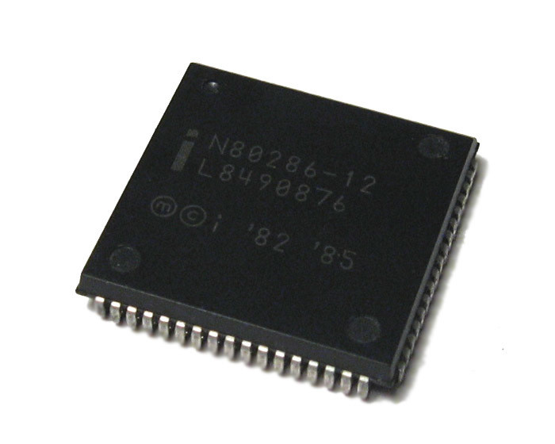

History of processor development: from the 70s to the 90s
List of sections +
-> Intel 4004 -> Intel 8008 -> Intel 8080 -> Motorola 6800 -> MOS Technology 6502 -> Zilog Z80 -> Intel 8086 -> Intel 8088 -> Zilog Z8000 -> Motorola 68000 -> Intel 80186 -> Intel 80286 -> WDC W65C816S -> Intel i386 -> Intel i486 -> Motorola 68020, 68030, 68040 -> DEC VAX -> NEC V60, V70, V80Intel 4004
 The first single-chip microprocessor is considered to be the 4-bit Intel 4004, released on November 15, 1971. Intel was just beginning its path of formation and its creators, Robert Noyce, Gordon Moore and Andrew Grove, spent a lot of effort on the development process. Thanks to the contribution of Italian physicist Federico Fagin, the company's engineers managed to place key components on one chip and create a 4004 microprocessor.
The first single-chip microprocessor is considered to be the 4-bit Intel 4004, released on November 15, 1971. Intel was just beginning its path of formation and its creators, Robert Noyce, Gordon Moore and Andrew Grove, spent a lot of effort on the development process. Thanks to the contribution of Italian physicist Federico Fagin, the company's engineers managed to place key components on one chip and create a 4004 microprocessor.
Intel 4004 was produced according to a 10-micron process technology, had 2250 transistors and operated at a frequency of 108 kHz (performed 92,600 operations per second). The synchronization frequency was 740 kHz. The amount of memory reached up to 4 KB, the bus bit depth was 4 bits. The crystal area was 12 mm2.
Intel 8008
 In the early 70s, the company released the first 8-bit Intel 8008 CPU. It was developed simultaneously with the 4004 on order for Computer Terminal Corporation (later Datapoint). But the company abandoned the CPU (as well as cooperation with Intel) due to the fact that the process of creating the chip went beyond the established deadlines, and its characteristics did not meet expectations.
In the early 70s, the company released the first 8-bit Intel 8008 CPU. It was developed simultaneously with the 4004 on order for Computer Terminal Corporation (later Datapoint). But the company abandoned the CPU (as well as cooperation with Intel) due to the fact that the process of creating the chip went beyond the established deadlines, and its characteristics did not meet expectations.
In terms of technical characteristics, the 8008 microprocessor largely corresponded to the previous version. It was produced according to the same 10-micron process technology and contained 3,500 transistors. The internal stack supported 8 levels, and the amount of memory was 16 KB. The clock frequency was lower than that of the 4004, it was 500 kHz. Intel's 8-bit processor lagged behind the 4-bit processor in terms of speed. The bus bit rate was 8-bit. The processor could access 8 input ports and 24 output ports.
One of the first computer systems based on a microprocessor was the Sac State 8008 project (1972). It was a full-fledged microcomputer with a disk OS, color display, 8 KB RAM and 3+2 MB disk, keyboard, modem, printer. It was intended for processing and storing medical records.
Intel 8080
 In the spring of 1974, Intel released an improved version — the Intel 8080 8-bit microprocessor. It was produced according to a new 6-micron process technology using NMOS technology, which allows placing 4758 transistors on a chip. The clock frequency was 2 MHz (eventually 2.5 MHz, 3.1 MHz and 4 MHz), the memory capacity was 64 KB. The bit depth of the data bus was 8-bits, and the address bus was 16—bits. The 8080 had a very developed command system: 16 data transfer commands, 31 commands for processing them, 28 commands for transition (with direct addressing), 5 control commands.
In the spring of 1974, Intel released an improved version — the Intel 8080 8-bit microprocessor. It was produced according to a new 6-micron process technology using NMOS technology, which allows placing 4758 transistors on a chip. The clock frequency was 2 MHz (eventually 2.5 MHz, 3.1 MHz and 4 MHz), the memory capacity was 64 KB. The bit depth of the data bus was 8-bits, and the address bus was 16—bits. The 8080 had a very developed command system: 16 data transfer commands, 31 commands for processing them, 28 commands for transition (with direct addressing), 5 control commands.
Due to the high performance of the processor enjoyed success. Based on Intel 8080, MITS has released the Altair-8800 microcomputer. Despite its modest characteristics (256 bytes of RAM, the absence of a monitor and keyboard), it gained unprecedented popularity and sold out very quickly.
There were many clones of Intel 8080 from other companies, such as National Semiconductor, NEC, Siemens and AMD. There was also a Soviet analogue from the Kiev Research Institute of Micro—devices - the KR580VM80A microprocessor (1977).
Motorola 6800
 In 1974, Motorola released its 6800 processor. The crystal was produced according to a 6-micron process technology, with a clock frequency of 2 MHz and a memory of 64 KB. The N-MOSFET technology was used. The processor had a 16-bit address bus and a command system of 78 operations. There was an index register.
In 1974, Motorola released its 6800 processor. The crystal was produced according to a 6-micron process technology, with a clock frequency of 2 MHz and a memory of 64 KB. The N-MOSFET technology was used. The processor had a 16-bit address bus and a command system of 78 operations. There was an index register.
The Motorola 6800 was very popular, it was used in many PCs. Based on its architecture, Motorola 6801 and 6803 microcontrollers were created.
MOS Technology 6502
 In 1975, MOS Technology introduced the 6502 8-bit microprocessor. In fact, this processor was an updated version of the 6501, which failed due to pin compatibility with the Motorola 6800. According to the characteristics of the CPU, it was inferior to competitors 8080 and 6800. It had a 16-bit address bus, 64 KB of RAM. The clock frequency was only 1 MHz. The processor had a CISC architecture.
In 1975, MOS Technology introduced the 6502 8-bit microprocessor. In fact, this processor was an updated version of the 6501, which failed due to pin compatibility with the Motorola 6800. According to the characteristics of the CPU, it was inferior to competitors 8080 and 6800. It had a 16-bit address bus, 64 KB of RAM. The clock frequency was only 1 MHz. The processor had a CISC architecture.
The advantage of this model was the price — only $ 25 (several times cheaper than Intel and Motorola). This contributed to the rapid growth of processor sales.
6502 was used in PCs such as Apple I, Apple II, Commodore PET, etc. Also, processors of this series have found application in video games, starting with the Atari 2600 console, using the 6507 model with fewer pins and the ability to address only 8 KB of memory.
MOS Technology has been granted licenses by Rockwell, Synertek for the production of processors and the use of 6502. There was a Soviet analogue of 4K602VM1.
Zilog Z80
 In the second half of the 70s, one of the creators of the microprocessor, the Italian Federico Fagin, left Intel. Teaming up with engineer Ralph Wingermann and Japanese engineer Masatoshi Shima, they founded the company Zilog. And already in the early summer of 1976, the Zilog Z80 processor entered the market, which in its architecture resembled the improved 8080. The microprocessor had an expanded instruction set, new registers, interrupt modes, and two separate register blocks.
In the second half of the 70s, one of the creators of the microprocessor, the Italian Federico Fagin, left Intel. Teaming up with engineer Ralph Wingermann and Japanese engineer Masatoshi Shima, they founded the company Zilog. And already in the early summer of 1976, the Zilog Z80 processor entered the market, which in its architecture resembled the improved 8080. The microprocessor had an expanded instruction set, new registers, interrupt modes, and two separate register blocks.
Z80 was produced according to a 3-micron process using CMOS technology, contained 8500 transistors. The clock frequency varied between 2.5 MHz — 8 MHz for the main version and 1 MHz — 20 MHz for the CMOS version. The amount of memory reached 64 KB, with a 16-bit address bus. The crystal dimensions were 4.6 mm x 4.9 mm, with an area of 22.54 mm2. In addition to the technical advantages, the Z80 was also cheaper than the Intel processor.
The CPU came out in different versions: Z80 (2.5 MHz), Z80A (4 MHz), Z80B (6 MHz) and Z80H (8 MHz). It was used in computers Sharp, NEC and others.
Intel 8086 and 8088
 In 1978, Intel released the first 16-bit 8086 microprocessor. Its development was carried out for more than two years. The processor was produced according to a 3-micron process technology, contained 29,000 transistors. The amount of memory reached 1 MB. The clock frequency was 4 MHz — 10 MHz, the bit depth of the registers and the data bus was 16 bits, and the bit depth of the address bus was 20 bits. Intel 8086 differed in the speed of work.
In 1978, Intel released the first 16-bit 8086 microprocessor. Its development was carried out for more than two years. The processor was produced according to a 3-micron process technology, contained 29,000 transistors. The amount of memory reached 1 MB. The clock frequency was 4 MHz — 10 MHz, the bit depth of the registers and the data bus was 16 bits, and the bit depth of the address bus was 20 bits. Intel 8086 differed in the speed of work.
The 8086 processor had fourteen 16-bit registers: 4 general purpose (AX, BX, CX, DX), 2 index registers (SI, DI), 2 index registers (BP, SP), 4 segment registers (CS, SS, DS, ES), a program counter or command pointer (IP) and the flags register (FLAGS, includes 9 flags).
 To increase sales of the 8086, Intel released the 8088 processor, which largely corresponded to its predecessor. Only the width of the bus has decreased, from 16 bits to 8 bits. Such a change allowed the processor to work with 8-bit support chips. The architecture has also changed somewhat. The Intel 8088 microprocessor used a 4-byte prefetch queue, not a 6-byte one.
To increase sales of the 8086, Intel released the 8088 processor, which largely corresponded to its predecessor. Only the width of the bus has decreased, from 16 bits to 8 bits. Such a change allowed the processor to work with 8-bit support chips. The architecture has also changed somewhat. The Intel 8088 microprocessor used a 4-byte prefetch queue, not a 6-byte one.
The processor was used in the first model of the IBM PC 5150 line (1981). Many large companies, like AMD, Siemens, NEC and others, have cloned 8088.
Zilog Z8000
 In 1979, Zilog released its Z8000 16-bit microprocessor. It was produced according to a 6-microns — 3-microns process technology with a number of transistors of 17500. The clock frequency ranged from 4 MHz to 10 MHz for the main version and from 4 MHz to 20 MHz for CMOS. The memory capacity reached 8 MB for the Z8001 and 64 KB for the Z8002. The bit depth of the data bus was 16 bits, and the address bus was 23 bits (in the Z8002 version — 16 bits).
In 1979, Zilog released its Z8000 16-bit microprocessor. It was produced according to a 6-microns — 3-microns process technology with a number of transistors of 17500. The clock frequency ranged from 4 MHz to 10 MHz for the main version and from 4 MHz to 20 MHz for CMOS. The memory capacity reached 8 MB for the Z8001 and 64 KB for the Z8002. The bit depth of the data bus was 16 bits, and the address bus was 23 bits (in the Z8002 version — 16 bits).
Initially, two versions of the processor were released: Z8001 and Z8002. Their differences consisted only in the fact that the first worked with addressing up to 8 MB of memory, and the second — only up to 64 KB. A little later, the Z8003 and Z8004 models appeared, which were able to work with virtual memory.
Z8000 processors were used in desktop Unix computers, allowing you to create real multi-user systems.
Motorola 68000
 The Motorola 68000 (68K) series of CISC microprocessors was introduced in 1979. The crystal had a 32-bit core, but operated via 16-bit data buses and a 24-bit address bus. Its frequency was 8 MHz — 20 MHz, and the number of transistors numbered 68,000 pieces. The CPU was produced in a DIP form factor with 64 pins. But there were also models with LCC and PGA connectors.
The Motorola 68000 (68K) series of CISC microprocessors was introduced in 1979. The crystal had a 32-bit core, but operated via 16-bit data buses and a 24-bit address bus. Its frequency was 8 MHz — 20 MHz, and the number of transistors numbered 68,000 pieces. The CPU was produced in a DIP form factor with 64 pins. But there were also models with LCC and PGA connectors.
The processor has gained popularity with many companies and has been used in various PCs. But of course, the most famous are Apple computers: Lisa and Macintosh.
Intel 80186
 The next Intel processor was the 80186, which was based on the 8086 architecture. It was produced according to a 3-micron process technology and contained 134,000 transistors. The memory size was 1 MB, the data bus was 16-bit, and the address bus was 20—bit. The clock frequency reached 6 MHz — 25 MHz.
The next Intel processor was the 80186, which was based on the 8086 architecture. It was produced according to a 3-micron process technology and contained 134,000 transistors. The memory size was 1 MB, the data bus was 16-bit, and the address bus was 20—bit. The clock frequency reached 6 MHz — 25 MHz.
New commands have been added to 80186:
— two direct memory access controllers with interrupt circuits (DMA);
— address decoders;
— three-channel programmable timer counter;
— synchronization generator;
— programmable interrupt controller.
Processors were little used in computers, only in some PC models, such as Compis (Sweden), RM Nimbus (UK), Unisys ICON (Canada), HP 200lx (USA), and Tandy 2000 (USA).
Intel 80286
 The company's next model was released in February 1982. It was a 16-bit x86-compatible second-generation 80286 microprocessor. There was support for real mode. In protected mode, the address space capacity could be up to 1 GB due to a change in the memory addressing mechanism.In terms of technical characteristics, the processor was superior to the previous model. It was produced according to a 1.5-micron process technology with the number of transistors in 134,000 pieces. The amount of RAM was 16 MB, and up to 1 GB of virtual memory could be used in protected mode. The bit depth of the registers and the data bus was 16-bits. Depending on the model, the clock frequency could be 6 MHz, 8 MHz, 10 MHz or 12.5 MHz (at 12.5 MHz, the processor performed at least 2.66 million operations per second).
WDC W65C816S
 In 1984, Western Design Center (WDC) released the W65C816S 16-bit microprocessor. The model had 24-bit memory addressing and supported up to 16 MB of random access memory, as well as an extended instruction set.
In 1984, Western Design Center (WDC) released the W65C816S 16-bit microprocessor. The model had 24-bit memory addressing and supported up to 16 MB of random access memory, as well as an extended instruction set.
The processor was used in the Apple IIGS computer, as well as the Acorn Communicator and C-One systems.
Intel i386
 In 1985, a 32-bit processor with the x86 architecture of the third generation Intel 80386 (or i386) was released. The processor has retained backward compatibility with the 8086 and 80286. It was produced according to 1.5-µm — 1.0-µm process technology. Through page conversion, the processor could address up to 4 GB of physical memory and up to 64 GB of virtual memory. The clock frequency was 12 MHz — 40 MHz.
In 1985, a 32-bit processor with the x86 architecture of the third generation Intel 80386 (or i386) was released. The processor has retained backward compatibility with the 8086 and 80286. It was produced according to 1.5-µm — 1.0-µm process technology. Through page conversion, the processor could address up to 4 GB of physical memory and up to 64 GB of virtual memory. The clock frequency was 12 MHz — 40 MHz.
The Intel i386 processor was presented in different versions, differing in performance, power consumption, connectors, housings and other characteristics. Models: 386DX (DX — Double-word eXternal), 386SX, 386SL and 386EX (modification of the 386SX processor).
The first computer to use a processor was the Compaq Deskpro 386. The model was also the first 32-bit processor for desktop and portable IBM PCs.
The i386 had quite a few clones, which were produced by AMD, Cyrix and IBM. AMD's top model was the Am386DX, which was not inferior in performance, cost less and had a clock frequency of 40 MHz. Cyrix 86SLC and 486DLC clones were also well received by users. The most famous IBM clones were the 386SLC and 386DLC processors, which were used in IBM PS/2 and PS/ValuePoint desktop computers.
Intel i486
 The company's next 32-bit processors, the i486 (1989), were more productive due to modernization. The CPU contained almost 1.2 million transistors (about half were allocated for cache memory). Chips were produced according to 1-micron process technology, later 0.8-micron and 0.6-micron process technology. The amount of memory was 4 GB. The clock frequency was 25 MHz — 50 MHz.
The company's next 32-bit processors, the i486 (1989), were more productive due to modernization. The CPU contained almost 1.2 million transistors (about half were allocated for cache memory). Chips were produced according to 1-micron process technology, later 0.8-micron and 0.6-micron process technology. The amount of memory was 4 GB. The clock frequency was 25 MHz — 50 MHz.
The processor was supplemented with:
— cache memory (8 KB);
— a computing pipeline that was engaged in dividing the processing of a computer instruction into a sequence of independent stages with the results saved at the end of each of them. The pipeline included sampling, decoding, decoding operand addresses, executing a command, and recording the result of executing an instruction;
— built-in coprocessor (floating-point operations module), which helps to perform mathematical operations on real numbers;
— multiplication factor (multiplier).
Different companies also copied Intel i486, as well as previous models. AMD, Cyrix, IBM, Texas Instruments and others were engaged in the production of clones.
Motorola 68020, 68030, 68040
 From 1984 to 1990, Motorola released a line of its 32-bit processors: 68020, 68030, 68040. The Pioneer i386 (68020) was produced according to a 2-micron process technology and had 190,000 transistors. Its clock frequency was 12 MHz — 33 MHz. 68020 became the first processor in the Motorola 68k line with built-in cache memory of the first level (256 bytes).
From 1984 to 1990, Motorola released a line of its 32-bit processors: 68020, 68030, 68040. The Pioneer i386 (68020) was produced according to a 2-micron process technology and had 190,000 transistors. Its clock frequency was 12 MHz — 33 MHz. 68020 became the first processor in the Motorola 68k line with built-in cache memory of the first level (256 bytes).
The processor was used in Apple computers: Macintosh II and Macintosh LC.
In 1987, the 68030 went on sale. The processor had a dynamic data bus that functioned in 8-bit, 16-bit and 32-bit modes. An additional 256 bytes of cache memory of the first level appeared. The clock frequency varied from 16 MHz to 50 MHz.
The Motorola 68030 was also used in Apple Macintosh II and Commodore Amiga computers, in Next Cube, Sun 3/80, Atari TT and Atari Falcon systems.
In 1990, the 68040 processor entered the market. It has a built-in coprocessor. The amount of instruction cache and data cache has increased to 4 KB. The principle of operation of the processor was based on computing pipelines, which consisted of six stages. The clock frequency reached 40 MHz.
The 68040 processor became the basis of the Macintosh Quadra High-End system. Macintosh Centris and Performa also used processors of the 68040 family.
DEC VAX
 In the period from the 80s to the 90s, DEC released a whole series of 32-bit processors that were based on its own VAX architecture (a 32-bit computer architecture was developed by Digital Equipment Corporation as part of the Star project).
In the period from the 80s to the 90s, DEC released a whole series of 32-bit processors that were based on its own VAX architecture (a 32-bit computer architecture was developed by Digital Equipment Corporation as part of the Star project).
The first in the series was the MicroVAX 78032. It was manufactured according to a 3-micron process technology and containing 125,000 transistors, operated at a frequency of 5 MHz.
In 1987, the CVAX chipset was introduced, the clock frequency of which was 11.11 MHz or 12.5 MHz. The processor was produced using first-generation CMOS technology, the total amount of instruction and data cache memory was 1 KB and 64 KB of external cache memory was supported.
NEC V60, V70, V80
 Processors of the Japanese domestic market deserve special mention.
Processors of the Japanese domestic market deserve special mention.
The first 32-bit V60 processor was released by NEC in 1986. This CPU was produced according to a 1.5-micron process technology and had 375,000 transistors. It used computing pipelines with six stages, and also had a built-in coprocessor and a memory management unit. The clock frequency reached 16 MHz.
In 1987, the V70 was released, which eventually began to be produced according to the 1.2-micron process technology. The clock frequency was 20 MHz. At this speed, the performance of the chip reached 6.6 million instructions per second.
And in 1989, the company released the V80 processor. This model already had instruction cache and data cache (1 KB each). The crystal was produced according to 0.8-micron process technology and contained 980,000 transistors. The V80 operated at 25/33 MHz.